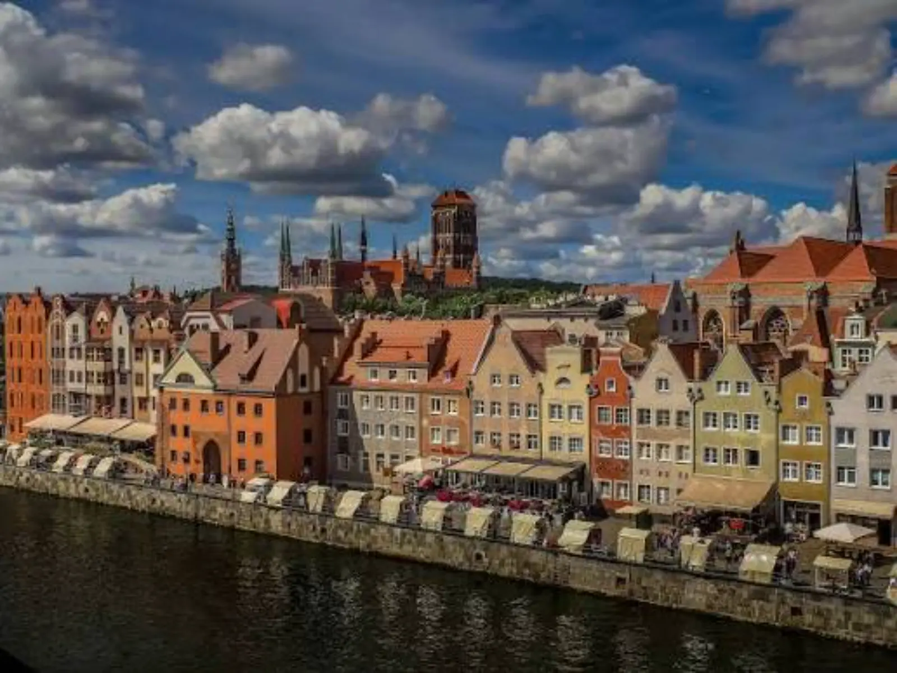

ARTICLE • October 30, 2026
Weekend in the Tricity — A 3-Day Plan
Gdańsk, Sopot, and Gdynia are three cities that form one of the most interesting places in Poland. Here is a 3-day plan to see the most important places in the Tricity.

The Tricity is one of the most interesting places in Poland — three cities that together form a coastal metropolis. Gdańsk, Sopot, and Gdynia differ from each other but together form a coherent whole. Here is a weekend plan.
Day 1 — Gdańsk
Start at the Main Town — the heart of Gdańsk, with the Long Market, the Town Hall, and the Neptune Fountain. It is worth seeing St. Mary's Basilica — the largest brick church in Europe, and the Crane — a medieval port crane over the Motława.
In the afternoon, go to the European Solidarity Centre — a museum dedicated to the history of Solidarity and the fall of communism in Poland. In the evening, walk along the Long Embankment — the Motława waterfront, full of restaurants and cafés.
Day 2 — Sopot
In the morning, drive to Sopot — a seaside resort located between Gdańsk and Gdynia. It is worth walking along Monciak — the main promenade of the city, and going onto the Pier — the longest wooden pier in Europe (511 m).
In the afternoon, take a walk along the beach toward Orłowo — a district of Gdynia, located at the foot of a cliff. In the evening, return to Sopot and have dinner at one of the seaside restaurants.
Day 3 — Gdynia
The last day is a walk through Gdynia — a modernist city that was founded in the 1920s. It is worth seeing Kościuszko Square, the Southern Pier, and the Gdynia Aquarium. Finally, climb Kamienna Góra — a hill with a viewpoint over the entire Tricity.
In the afternoon, return home. If you have time, stop in Oliwa — a district of Gdańsk, where Oliwa Cathedral with the largest organs in Poland is located.
Where to Sleep?
The best bases are Gdańsk (Old Town), Sopot (center), and Gdynia (center). All cities have extensive accommodation and are well-connected. It is worth choosing a hotel or apartment in the center to have everything within walking distance.
What to Eat?
Pomeranian cuisine is Baltic fish, herring, and seafood. It is worth trying herring in oil, smoked fish, golce, and fried flounder. In Gdańsk, Sopot, and Gdynia there are many fish restaurants and fish shops.
Practical Tips
The Tricity is a tourist region — in the summer season (July-August) it is crowded, and prices are high. It is worth going off-season — in spring or autumn, when the cities are calmer. Transport between the cities is good — trains, buses, and trams run regularly.